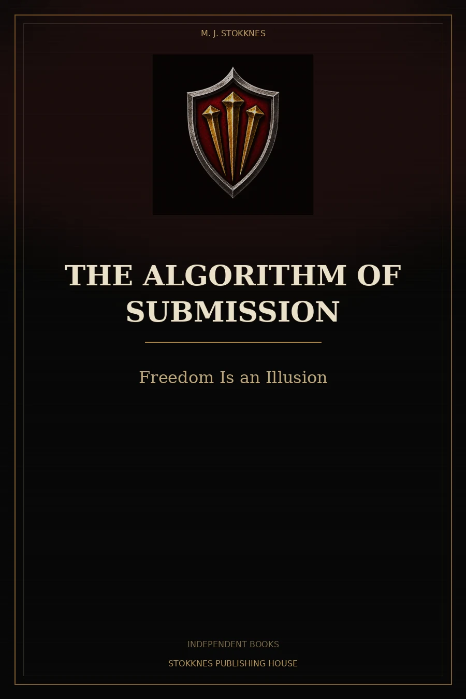
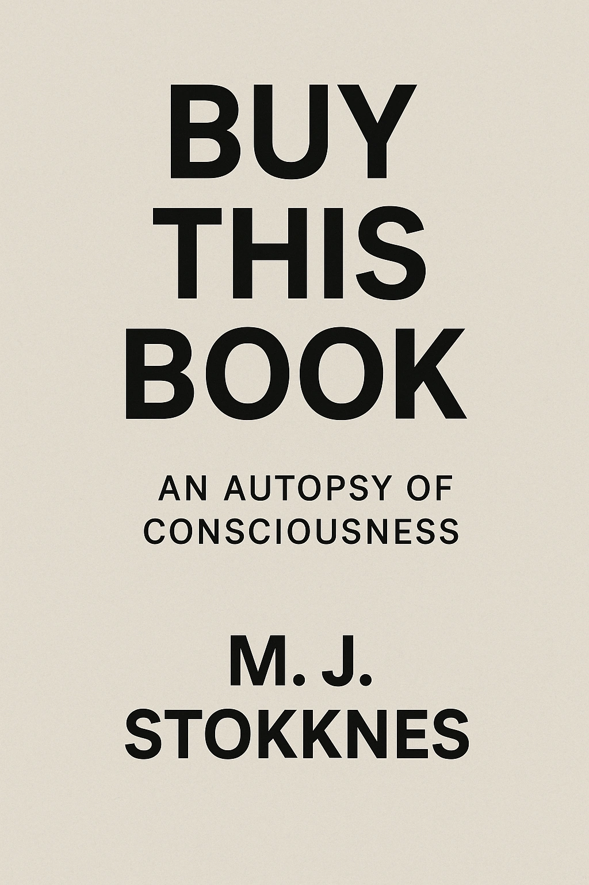

La misma maquinaria, en otro idioma.
Las portadas muestran la identidad visual del trabajo original cuando no existe un activo público separado para la traducción. La disponibilidad exacta se registra por formato.

El Algoritmo de la Sumisión
Un thriller escalofriante sobre un sistema que consume la voluntad humana.
Original: The Algorithm of Submission
Una novela corta especulativa sobre inteligencia artificial, dependencia, control institucional y la forma en que la optimización puede convertirse en obediencia.
| Format | Status | Price | ASIN | Link |
|---|---|---|---|---|
| Kindle eBook | Live | €2.79 EUR | B0DM85186Q | Amazon ↗ |
| Paperback | Live | €12.95 EUR | B0DM9M4T5L | Amazon ↗ |
| Hardcover | Live | €15.95 EUR | B0DM9GX67Y | Amazon ↗ |
La Planta Silenciosa
Las métricas del control.
Original: The Quiet Floor
Maeva llega a Málaga para trabajar en Synapse Connect, donde cada gesto, pausa y reacción puede convertirse en una métrica de rendimiento.
| Format | Status | Price | ASIN | Link |
|---|---|---|---|---|
| Kindle eBook | Live | €4.99 EUR | B0H5FP9CD2 | Amazon ↗ |
| Paperback | Live | $25.99 USD | B0H5FZ2VHW | Amazon ↗ |
| Hardcover | Live | €29.99 EUR | B0H5FQ7NMC | Amazon ↗ |

Amor, Caos y Tú
Este libro no salvará tu relación.
Original: Love, Chaos & You
Una exploración de la intimidad, la proyección, la soledad, la comparación y la lógica de mercado cuando entra en la vida afectiva.
| Format | Status | Price | ASIN | Link |
|---|---|---|---|---|
| Kindle eBook | Live | €5.00 EUR | B0G1V63YD3 | Amazon ↗ |
| Paperback | Live | €17.00 EUR | B0G1Y6B1G9 | Amazon ↗ |
| Hardcover | Live | €30.00 EUR | B0G1Y2819T | Amazon ↗ |

Poder, Caos y Tú
Este libro no va a salvarte.
Original: Power, Chaos & You
Una exploración del poder invisible, la obediencia interiorizada, los algoritmos, el espectáculo y las estructuras que moldean la conducta.
| Format | Status | Price | ASIN | Link |
|---|---|---|---|---|
| Kindle eBook | Live | €5.00 EUR | B0G1V6R19N | Amazon ↗ |
| Paperback | Live | €15.00 EUR | B0G1ZDZW8D | Amazon ↗ |
| Hardcover | Live | €25.00 EUR | B0G1ZDGWPS | Amazon ↗ |
La Mentira de Que Alguien Lo Sabe
Sobre conspiración, certeza y agotamiento
Original: The Lie That Someone Knows
Una anatomía de la conspiración, la certeza, la desconfianza y el momento en que el agotamiento empieza a parecer conocimiento.
| Format | Status | Price | ASIN | Link |
|---|---|---|---|---|
| Kindle eBook | Not created | — | — | Not available |
| Paperback | Live | €14.99 EUR | B0GYNGQCS4 | Amazon ↗ |
| Hardcover | Not created | — | — | Not available |

Cómpralo
Una Autopsia de la Conciencia
Original: BUY THIS BOOK.
Una confrontación filosófica con la conciencia, la identidad, el significado y el tiempo.
| Format | Status | Price | ASIN | Link |
|---|---|---|---|---|
| Kindle eBook | Not created | — | — | Not available |
| Paperback | Live | €7.99 EUR | B0GHJSC5G4 | Amazon ↗ |
| Hardcover | Not created | — | — | Not available |